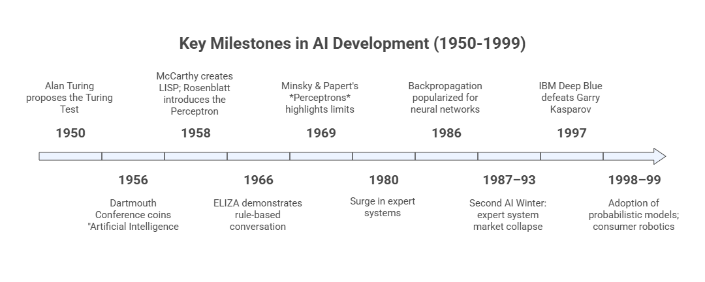
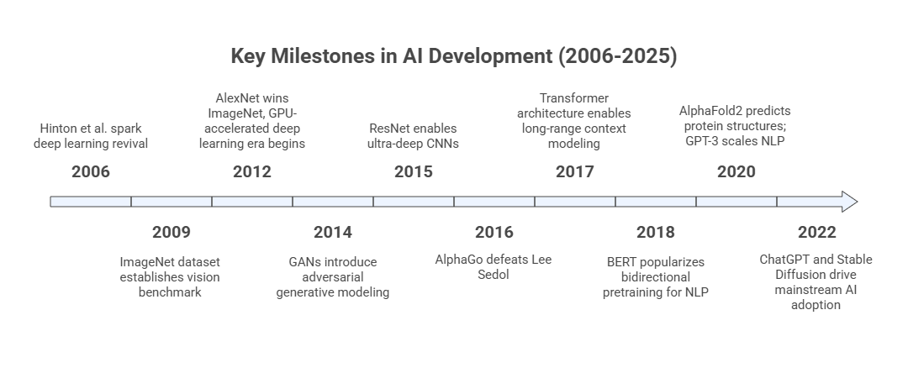

Module 1: A Brief History of Artificial Intelligence#
This module explores how Artificial Intelligence emerged, evolved, and continues to shape our future. It follows the story told in the video and slides across three eras — The Foundation Years (1950–2000), Modern AI Development (2000–2025), and The Future Horizon.
Learning Objectives#
After completing this module, you will be able to:
Identify key milestones and personalities that shaped the history of AI.
Understand how computing paradigms and data availability influenced AI progress.
Recognize the cycles of optimism, disappointment, and renewal that define AI’s evolution.
Reflect on the trends leading toward the next generation of AI systems.
Part I — The Foundation Years (1950 – 2000)#
Artificial Intelligence was born at the intersection of philosophy, mathematics, and computer science.
The first decades were marked by ambitious ideas and groundbreaking experiments.
1.1 The Birth of the Idea#
Alan Turing (1950) proposed the question “Can machines think?” in his paper Computing Machinery and Intelligence, introducing the Turing Test as a benchmark for machine intelligence.
The term “Artificial Intelligence” was formalized by John McCarthy in 1956 during the Dartmouth Conference, the symbolic birth of the field.
Early pioneers such as Marvin Minsky, Allen Newell, and Herbert Simon believed intelligence could be expressed as symbolic reasoning — logic, rules, and search.
1.2 Early Approaches and Expectations#
Logic-based systems and expert systems dominated the early decades.
The Perceptron (1958) by Frank Rosenblatt introduced the concept of a learning machine inspired by the brain.
The 1960s and 1970s saw growing optimism — AI programs could solve puzzles, play games, and prove theorems.
1.3 The AI Winters#
Periods of AI Winter occurred when expectations outpaced results, and funding or public interest declined.
First AI Winter (mid-1970s) – limited computing power, connectivity and data.
Second AI Winter (late 1980s) – expert systems failed to scale, and symbolic approaches reached their limits.
Yet, during these winters, important foundations such as backpropagation, genetic algorithms, and fuzzy logic matured quietly, preparing the ground for future breakthroughs.

Part II — Modern AI Development (2000 – 2025)#
At the turn of the century, AI entered a new era — one driven by data, computation, and connectivity.
2.1 The Rise of Machine Learning#
Machine Learning (ML) shifted focus from programming explicit rules to learning from data.
Key advances in the 2000s:
The expansion of big data through the internet.
Growth in computational power (GPUs and cloud computing).
Emergence of open-source frameworks such as TensorFlow and PyTorch.
ML became the engine behind recommendation systems, spam filters, voice recognition, predictive analytics, and many other developments.
2.2 The Deep Learning Revolution#
2012 – ImageNet breakthrough: deep convolutional networks (AlexNet) drastically improved image recognition accuracy.
Deep Learning models began to outperform humans in specific tasks:
Speech recognition, translation, medical imaging, Go, and protein folding.
The architecture of artificial neural networks (ANNs) took inspiration from the human brain but scaled to billions of parameters.
2.3 The Age of Generative AI#
Around 2018–2023, transformer architectures (e.g., Attention Is All You Need, 2017) transformed AI once again.
Large Language Models (LLMs) such as GPT, Claude, Gemini, and LLaMA learned to generate coherent text, images, and code.
AI moved from classification and prediction to creation and synthesis, giving birth to the Generative AI era.
We are witnessing AI’s shift from tools that analyze to tools that create.

Part III — The Future Horizon#
AI’s future will likely be defined by the balance between capability, responsibility, and human-centered design.
3.1 Emerging Trends#
Multimodal AI — integrating text, image, audio, and sensor data in unified models.
Edge and embedded AI — intelligent devices operating locally without cloud dependency.
Responsible and ethical AI — focusing on transparency, fairness, and societal impact.
Human-AI collaboration — AI as a partner for creativity, learning, and decision-making.
3.2 From Automation to Augmentation#
The next wave of AI is not about replacing humans, but about augmenting human capabilities.
AI systems are being integrated into education, healthcare, business, the arts, and virtually all fields.
A key challenge is designing trustworthy AI that reflects human values and goals.
Continuous learning — for both machines and humans — will be essential for responsible progress.
Reflection#
How did the ambitions of early AI pioneers shape today’s technologies?
What lessons can we learn from past AI winters as we design the future of AI?
Reflect on how each generation of AI redefined what we mean by intelligence, and how your own perspective on AI might evolve through this course.
📘 Further Reading#
Russell, S., & Norvig, P. (2020). Artificial Intelligence: A Modern Approach., 4th Ed., Pearson.
Boden, M. (2016). AI: Its Nature and Future., Oxford University Press.
Mitchell, M. (2020). Artificial Intelligence: A Guide for Thinking Humans., Picador Paper.
Sejnowski, T. J. (2023). ChatGPT and the Future of AI: The Deep Language Revolution., The MIT Press.
de Castro, L. N. (2026). Exploratory Data Analysis: Descriptive Analysis, Visualization, and Dashboard Design, CRC Press.
Dendritic Institute (2025). AI Literacy Series – Module 1: The History of AI. (Slides & video lecture)